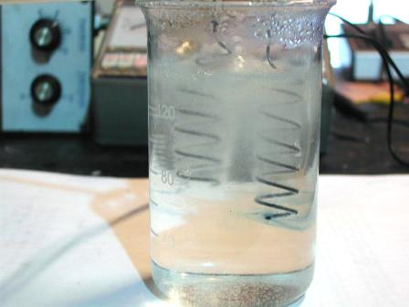
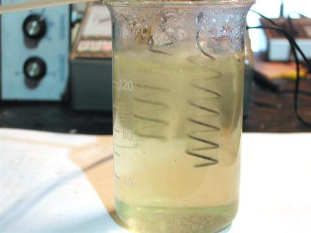
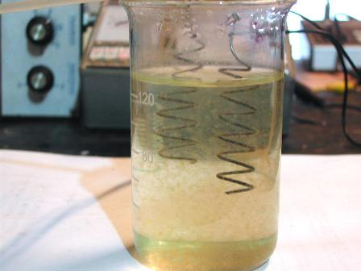
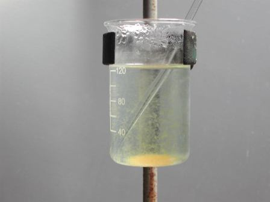
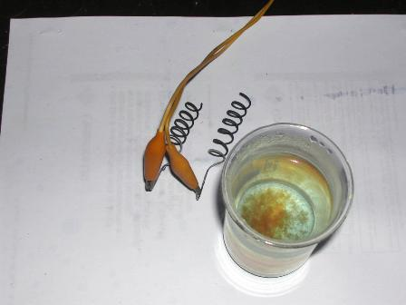
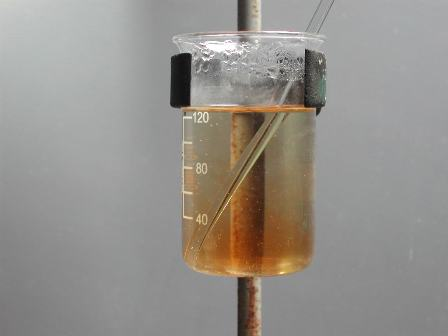

Sul sito di Rosalba (Crescere Creativamente) è ospitato il quattordicesimo Carnevale della Chimica, che ha come tema "La chimica delle nascite", da interpretarsi naturalmente in senso libero.
Prendendo spunto da un raccontino di Joe Schwacz, dirò di come può nascere una truffa chimica!
Sentite cosa dice il grande divulgatore della McGill University (protagonsti del racconto sono lo stesso professore ed un venditore di filtri per l'acqua di rubinetto, che tenta di convincerlo che l'acqua della rete idrica è piena di dannosissime "sostanze chimiche"):
...l'apparecchiatura che ne trasse faceva una certa impressione. Risultò che era una sorta di dispositivo elettrico comprendente un paio di asticelle metalliche che assomigliavano a elettrodi. Mi chiese poi dell'acqua presa dal mio rubinetto. La annusò e, evidentemente convinto che il liquido fosse abbastanza tossico, procedette a immergere in esso gli elettrodi. Poi esclamando: "E ora guardi!" collegò il dispositivo a una presa elettrica. In una trentina di secondi l'acqua cominciò a intorbidarsi ed entro un minuto aveva formato una repellente schiuma gialla. "Ha visto?" esclamò trionfalmente, lasciando intendere che grazie al passaggio di corrente elettrica egli aveva separato dalla soluzione quelle repellenti sostanze chimiche...
La storiella di cui sopra è tratta dalla prefazione del libro "Il genio della bottiglia", che conferma, assieme alle altre sue opere, che l'Autore è persona di sottile ironia nelle sue simpaticissime dimostrazioni di quanto sia popolarmente incompresa e a volte fuorviata ad arte la nostra amata scienza chimica.
Qualche anno fa ricordo di aver visto (senza andare in Canada!) su qualche nostrana quanto balorda televendita esattamente ripetuta l'esperienza di quell'incauto venditore di Montreal: la voglio riproporre per l'occasione.
Consiste in questo: immergere in un bicchiere d'acqua di rubinetto due elettrodi metallici pulitissimi, collegarli alla corrente di casa e aspettare qualche minuto.
Dopo un po' nel bicchiere nuoterà una sgradevole torbidità marrone, che, agli occhi... degli allocchi sarà la prova inconfutabile che l'acqua, inizialmente bella, limpida e pulita, in realtà nascondeva chissà quali porcherie, abilmente tenute nascoste da quel cattivone del proprio Comune.
-"Ecco allora, cara signora, che con questo favoloso filtro che le propongo a pochi (in realtà molti!) euro, lei potrà finalmente bere acqua sana e perfettamente pura anche dal suo rubinetto..."
Dove sta il trucco? Il trucchetto, che è una truffa bella e buona, sta proprio in quei pulitissimi elettrodi, che sono sì pulitissimi, ma di ferro...
Per dirla in due parole, il ferro, sottoposto ad elettrolisi in acqua si ossida all'anodo come ione ferrico, il quale nell'ambiente debolmente alcalino della soluzione precipita come ossido ferrico idrato, simile a fiocchetti di ruggine di aspetto sgradevolmente "sporco".
Per una spiegazione approfondita di tutto il fenomeno bisognerebbe tirare in ballo la debole salinità dell'acqua dovuta alla sua durezza, l'ossidazione del ferro agli elettrodi (che si scambiano perchè siamo in corrente alternata), la progressiva alcalinizzazione della soluzione, e così via, ma verrebbe un discorso noioso.
Notare che l'elettrolisi può avvenire senza problemi anche alla normale tensione di rete (230 volt) perchè la resistività dell'acqua potabile è grande e non c'è pericolo di sovracorrente (nel mio caso, illustrato sotto, la corrente era circa 500 mA); d'altra parte l'effetto Joule di riscaldamento è notevole e la soluzione arriva in pochi minuti alla temperatura di ebollizione.
Ma tutto ciò, cioè l'assenza di sospetti alimentatori e la velocità di reazione, facilitano non poco il disonesto venditore.
E la massaia, che di chimica giustamente non sa un tubo, vede sotto i suoi occhi apparentemente senza trucco e senza inganno un liquido prima limpido e poi diventare "sporco" senza che nessuno l'abbia apparentemente sporcato...
Anche gli elettrodi erano perfetti all'inizio, al di sopra di ogni sospetto! Ergo, dice incoraggiata dal venditore, se gli inquinanti non sono venuti da nessuna parte dovevano essere già nell'acqua, anche se erano "invisibili"!
Ingegnoso vero? In quanti ci saranno cascati in giro per il mondo? Quanti avranno comprato quel "favoloso filtro"?
Inutile dire che le "repellenti sostanze chimiche" si sarebbero rivelate identiche se si fosse fatto il test anche dopo la sua applicazione, ma nessuno pensa a questa lapalissiana richiesta...
Per tener fede al titolo di questo blog e in onore e alla salute di tutti i creduloni di questo mondo, ecco realizzata qui sotto l'esperienza della quale parla Joe Schwacz.
Più che le parole convincono le immagini, avrà detto quel venditore di Montreal, e lo dico anch'io.
Guardate:

Acqua di rubinetto con gli elettrodi di ferro prima dell'elettrolisi: tutto bello limpido e pulito!

Passa la corrente e cominciano a svolgesi bollicine di gas e vapore

L'acqua comincia a introbidarsi e si riscalda notevolmente per effetto Joule

Poco dopo si è già formato dell'idrossido ferrico disperso nel liquido

Togliendo la corrente il precipitato marroncino comincia a flocculare

Gli elettrodi si sono ossidati e la "ruggine" è in fondo al becker

Prima di buttar via tutto facciamo una semplicissima prova per la ricerca del ferro:
Bastano qualche goccia di acido cloridrico e di tiocianato di ammonio... ed ecco che l'arrossamento nel becker dimostra che la "porcheria" altro non era che il ferro degli elettrodi passato in soluzione!
Cosa si potrebbe fare per evitare questi e simili raggiri alla Joe Schwacz?
Ci sarebbe un sistema infallibile e semplicissimo: programmare e incoraggiare un minimo di formazione scientifica a tutti i livelli.
Se solo lo 0,1% dell'astronomica quantità di boiate televisive fosse sostituito da altrettanta divulgazione scientifica il mondo cambierebbe (ho detto lo 0,1%, non il dieci...).
Ma mi rendo conto che esistono poche cose così assurde e irrealizzabili.